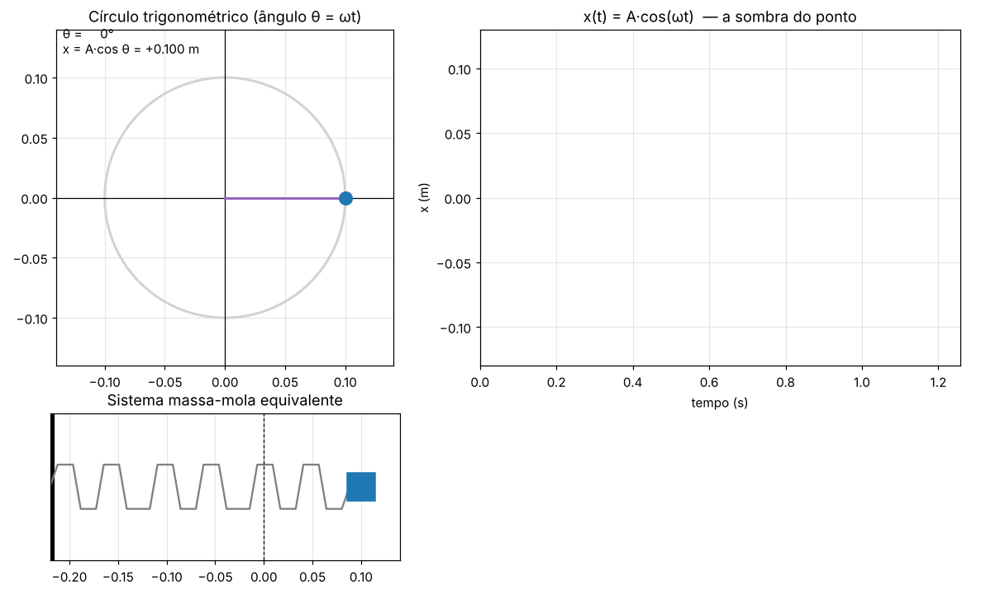
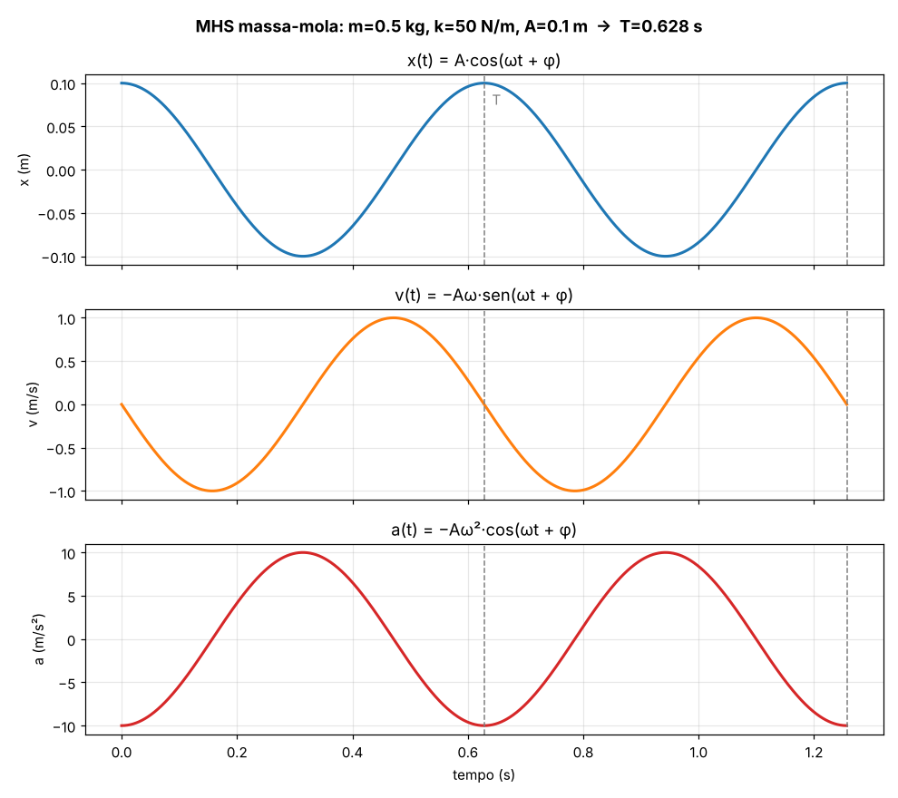
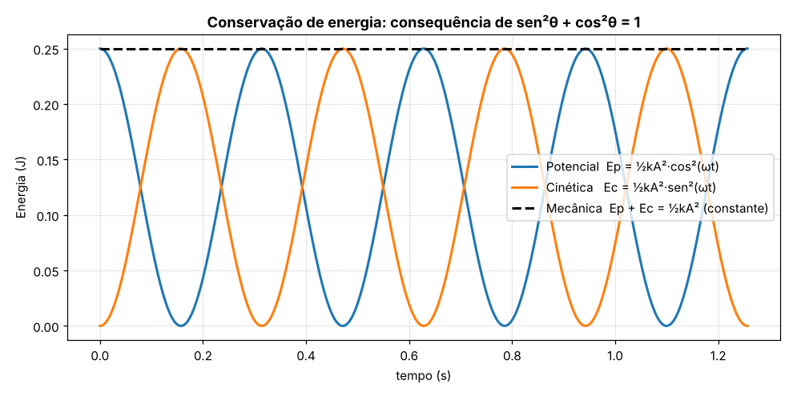
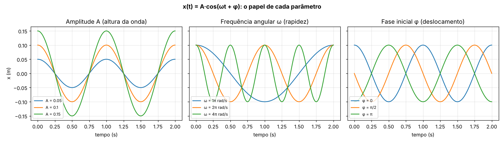
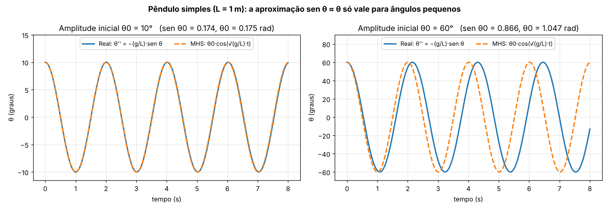

Movimento Harmônico Simples
Como a trigonometria descreve tudo que oscila: molas, pêndulos, cordas de violão e o som.
Situação-problema. Um bloco de 0,5 kg está preso a uma mola de constante
k = 50 N/m. Ele é puxado 10 cm da posição de equilíbrio e solto. Como o bloco se move?
O modelo trigonométrico
x(t) = A · cos(ω·t + φ)
| Grandeza | Fórmula | No problema |
|---|---|---|
| Velocidade | v(t) = −A·ω·sen(ωt + φ) | vmáx = 1 m/s |
| Aceleração | a(t) = −A·ω²·cos(ωt + φ) = −ω²·x | amáx = 10 m/s² |
| Frequência angular | ω = √(k/m) | 10 rad/s |
| Período | T = 2π/ω | ≈ 0,628 s |
| Energia mecânica | E = ½·k·A² | 0,25 J |
Simulador interativo
Um ponto gira no círculo trigonométrico com ângulo θ = ωt. A sombra dele no eixo horizontal vale A·cos θ, e essa sombra se move exatamente como o bloco da mola. Mude os parâmetros e veja o gráfico mudar.
ω = √(k/m)
período T = 2π/ω
frequência f = 1/T
vmáx = A·ω
energia E = ½kA²
Resultados gerados em Python
As figuras abaixo foram geradas pelo programa mhs.py, escrito em Python com as bibliotecas NumPy e Matplotlib.





Valores em ângulos notáveis
| t | ângulo ωt | x (m) | v (m/s) | a (m/s²) |
|---|---|---|---|---|
| 0 | 0 | 0,10 | 0 | −10 |
| T/4 | π/2 | 0 | −1 | 0 |
| T/2 | π | −0,10 | 0 | 10 |
| 3T/4 | 3π/2 | 0 | 1 | 0 |
| T | 2π | 0,10 | 0 | −10 |
Como rodar o código
Baixe o mhs.py e rode no computador, ou cole o código numa célula do Google Colab.
pip install numpy matplotlib pillow python mhs.py